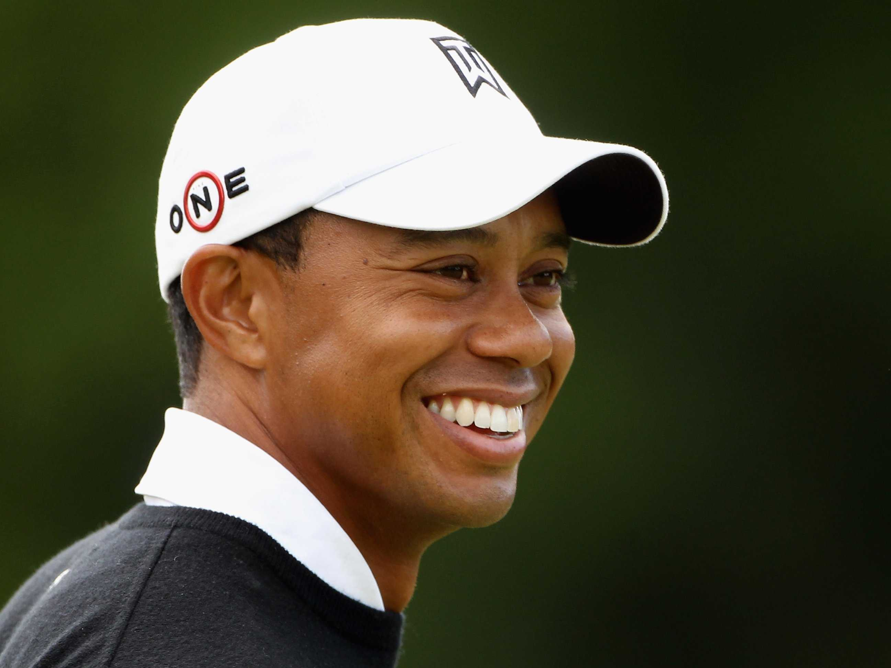
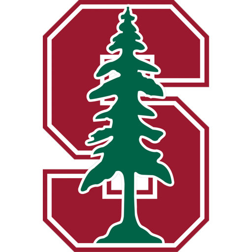

Summary

E
ldrick Tont "Tiger" Woods is an American professional golfer who is among the most successful golfers of all time. He has been acclaimed to be one of the highest paid athletes of all time with an array of highly sought-after endorsements including: Nike, Taylormade Golf, Bridgestone Golf, Rolex, Kowa, Upper Deck, and Hero Motor Group. He has won a total of 79 PGA Tour career wins, 14 majors (4 Masters, 3 U.S. Opens, 3 British Championships, and 4 PGA Championships), and the youngest golfer ever to achieve the career Grand Slam. Currently at the age of 41, Tiger has achieved numerous awards and broken several records such as the PGA Player of the Year (11 times), the Byron Nelson Award (8 times), #1 in the leading golf money list in 10 seasons. Tiger has revolutionized the sport of golf and is often talked along side other golf Hall of Famers such as Gary Player, Arnold Palmer, and Jack Nicklaus.
Tiger Woods was born on December 30, 1975 in Cypress California to Earl and Kultilda Woods. Growing up in Orange County, California, he picked up the game of golf at the age of 2, and practiced at his father's naval golf course - Joint Forces Training Bases in Los Alamitos. In 1978, Tiger Woods was considered a childhood golf prodigy and was featured in a television appearance on The Mike Douglas Show (video). In his youth, Tiger attended Stanford University and won 3 consecutive U.S. Amateur Titles and the NCAA individual golf championship. He briefly attended the university for two years, and turned professiona in 1996. In his first year as a tour professionaly, Tiger won his first major at the Masters in 1997 (youngest ever winning at the age of 21) and ascended to the #1 spot (fastest ever) in only two months. Tiger wrapped up his 1997 career debut with 8 PGA tours wins, including the PGA Championship.